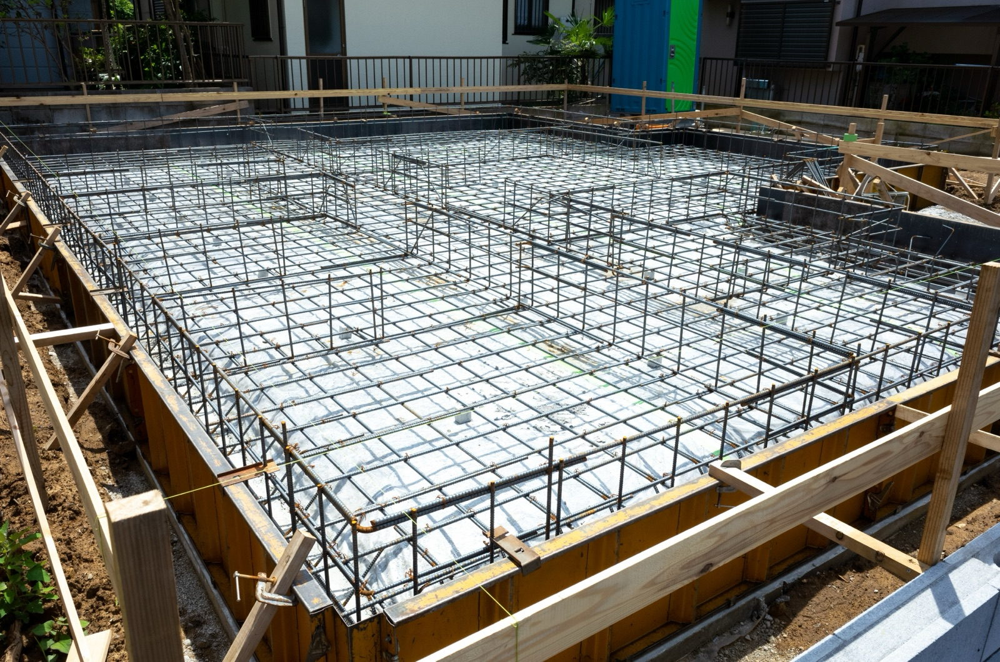
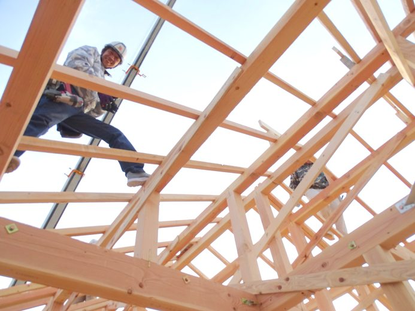

資金計画の打ち合わせで、私はご両親から援助を受ける予定があるかを最初に伺います。
家を建てるためのお金なら、条件を満たせば1,000万円まで贈与税がかかりません。
いまの決まりでは、2026年12月31日までの贈与が対象です。
いくらまで、贈与税がかからないか
父母や祖父母から、自分が住む家の新築・購入に使うお金をもらったときに使える特例です。
非課税になる金額は、建てる家の性能で変わります。
暦年課税の基礎控除110万円と合わせて使えるので、質の高い住宅なら最大1,110万円まで贈与税がかかりません。
「質の高い住宅」の基準
新築の場合は、次の3つのうち、どれか1つに当てはまれば「質の高い住宅」になります。
一次エネルギー消費量等級6以上
シバサンホームの標準は、耐震等級3と断熱等級6（NEST・ARCH）です。
耐震等級だけでも、この基準に当てはまります。
ただし、証明の書類は検査機関などに発行してもらうものなので、費用と時期は契約の前に確かめておきます。

標準の性能を見る耐震等級3・断熱等級6など、標準で入るものの一覧です。
2026年中に受け取るなら、上棟は2027年3月15日まで
この特例には、お金を受け取ったあとの期限があります。
贈与を受けた翌年の3月15日までに、家の新築をしていなければいけません。
新築には、屋根の骨組みまで組み上がって、建物として土地に固定された状態も含まれます。
注文住宅でいえば、上棟が済んでいれば条件を満たします。

贈与の翌年3月15日までに、ここまで進んでいる必要があります。
贈与税の申告をする
遅くとも2027年12月31日までに住む
注文住宅は、建物の契約から上棟まで数か月かかります。
いまから土地を探し始める場合は、2027年3月15日までの上棟に間に合わないことがあります。
2027年以降の贈与にこの特例が使えるかは、2026年10月の時点では決まっていません。
先に受け取ってしまうと、上棟が間に合わなかったときに特例が使えません。
土地を買うお金にも使える
その土地に家を新築する場合は、家より先に買う土地の代金にも、このお金を使えます。
ただし、土地だけを買って、贈与の翌年3月15日までに家の新築が始まっていなければ、特例は使えません。
仲介手数料の目安をまとめています。
受け取る人の条件
- 贈与をする人が、父母・祖父母など直系の親族であること
- 贈与を受けた年の1月1日に、18歳以上であること
- 贈与を受けた年の合計所得金額が、2,000万円以下であること
- 家の床面積が、50㎡以上240㎡以下であること
合計所得金額が1,000万円以下の方は、床面積40㎡以上から対象になります。
税金が0円でも、申告は要る
非課税の範囲に収まっていても、申告は必要です。
申告の期間は、2月1日から3月15日までです（贈与を受けた翌年）。
申告をしないと、この特例は使えません。
申告には、住宅の登記事項証明書や工事の契約書の写し、質の高い住宅であることを示す書類などが要ります。
書類の詳しい内容は、税務署か税理士に確かめてください。
借入限度額が変わります。
よくある質問
親から家を建てるお金をもらうと、いくらまで贈与税がかかりませんか？
2026年12月31日までの贈与なら、質の高い住宅は1,000万円、それ以外の住宅は500万円まで非課税です。
暦年課税の基礎控除110万円と合わせると、質の高い住宅で最大1,110万円になります。
贈与税が0円でも、申告は要りますか？
要ります。
贈与を受けた翌年の2月1日から3月15日までに、贈与税の申告書と必要な書類を税務署に出してください。
申告をしないと、この特例は使えません。
土地を買うお金にも使えますか？
その土地に家を新築する場合は、家より先に買う土地の代金にも使えます。
ただし、贈与を受けた翌年の3月15日までに、その家の新築が始まっていることが条件です。
2027年に贈与を受けても、この特例は使えますか？
2026年10月の時点では、2027年以降の贈与に使えるかは決まっていません。
延長されるかどうかは、税制改正の大綱で示されます。
まとめ
- 父母・祖父母からの住宅資金は、1,000万円まで非課税です（質の高い住宅の場合）。
- 対象は2026年12月31日までの贈与です。
- 贈与の翌年3月15日までに、上棟と申告を済ませます。
- 耐震等級2以上の家は、「質の高い住宅」に当てはまります。
- 受け取る日は、上棟の日から逆算して決めてください。
2026年10月時点の国土交通省の資料をもとに書いています。
ご自身に当てはまるかは、税務署か税理士に確かめてください。

奈良の工務店シバサンホームで、
土地さがし・資金計画・打合せの窓口をしています。
モットーはスピード・誠実さ・楽しさ。